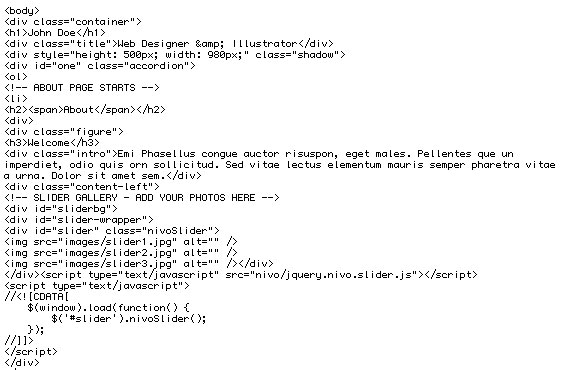
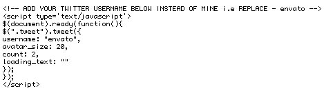
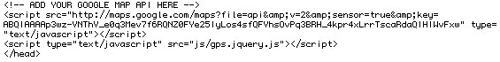

Created: 31/5/2011
By: Jo Phillips
Website: spiralpixel.com
Thank you for purchasing my theme. If you have any questions that are beyond the scope of this help file, please feel free to email via my user page contact form here. Thanks so much!
I have divided the html into sections for you.
About

1: Add you name and job title in the h1 and title tags.
2: ABOUT PAGE STARTS - This is your first page. To add your pictures to the Nivo Slider simply change your images in the code commented - SLIDER GALLERY - ADD YOUR PHOTOS HERE . The slider images are 315px x 224px.
The css, js and images for the slider can be found in the folder > nivo. You can change the styling for this in the file called style.css.
Skills
1: SKILLS PAGE STARTS - The quotes/ testimonials can be edited by adding yours in the blockquote html code. They have been commented for you, YOUR TESTIMONIALS.
The star jpgs can be found in the images folder, I have added five jpgs to cover all ratings.
Gallery
1. GALLERY PAGE STARTS - The gallery has been coded using coda slider. You can find the css and images for this in the folder named > coda.
I have used three examples within this gallery
a) Thumbnails. The thumbnails are 60px x 60px in size. They open using PrettyPhoto. More information on this can be found in the php section below.
The page title can be added in between the h2 title tags.
b) Single. This type of gallery can show your featured projects.
c) Double. Shows the gallery using two pictures.
Social
1: SOCIAL PAGE STARTS - The social links use Tip Tip Tooltips. Information on these is shown in the php section below.
2: The Twitter Box. Add you own user name. You can find the code for this in the head section of the html code. Simply replace 'envato' with your twitter id.

Contact
Contact Form:
2: To get the contact form to forward to your email address.
a) In a text editor of your choice, open the folder called contact > php > contact-send.php
Scroll down to near the bottom of the page, round about line 50/51, until you see the line shown below.
//No errors, send mail using conditional to ensure it was sent.
if(mail('YOUREMAILADDRESS', "Message from $input_name - $input_subject", $input_message, "From: $input_email"))
{
b) Simply add your email address within the quote marks where it says YOUREMAILADDRESS
Google Maps:
1; I have used the plugin called jQuery GPS
In order to use the Google Maps API you must have an API key which you can get here:
http://code.google.com/intl/en/apis/maps/signup.html

2. Once you have it add it after where the code says key. You can see mine in the example above. You can find the code to change just above the end of the head section.
3. To add your address to the map, scroll right down to the bottom of index.html until you see GOOGLE MAP. Add your address where it says, England. Done!
You can find more documentation about this plugin here:
http://www.birdwingfx.com/jQuery_gps/docu.html
I'm using one CSS file for this theme. - main.css.
To change your background image
/* 3: Grey Theme */
.grey { border: 3px solid #fff; padding: 0px 0px; background: #fff; }
.grey li > h2 { background-image:url(bg/dark_grid.jpg); background-repeat:repeat;
font: normal 18px 'DroidSerifRegular', Arial, sans-serif; color: #555;
line-height: 2.4em; text-shadow: 0 -1px 0 #fff; }
.grey li > h2 span {border-top: 1px solid #ccc; border-bottom: 1px solid #ccc;
border-right: 1px solid #ccc; background-image:url(images/check.jpg); background-repeat:repeat; }
/* number ++++++++++++++++++++++++++++++++++++++++++++ */
.grey li > h2 b { color: #999; font-size: 20px; background-image:url(images/check.jpg); background-repeat:repeat; }
.grey li > h2 b:hover, .grey li > h2 :hover { color: #777; }
/* page background ++++++++++++++++++++++++++++++++++++++++++++ */
.grey li > div { background-color: #F9F9F9; height: 418px; border: 1px solid #ededed; }
a) Grey Theme. The styling of your vcard.
/* 2: HEADING */
/* your name */
h1 { font: normal 42px 'BallparkWeiner', Arial, sans-serif; color: #222;
text-align: center; text-shadow: 0px 1px 0px #fcfcfc; margin: 0px 0px; }
/* what you do */
.title {text-transform: uppercase;
font: normal 11px 'DroidSansRegular', Arial, sans-serif; color: #222;
text-align: center; margin: 0px 0px 20px 0px; }
/* INTRO */
/* page headings */
h3 { font: normal 20px 'DroidSerifRegular', Arial, sans-serif; color: #444;
background: url(images/line.png) bottom repeat-x; padding: 0px 0px 2px 0px;
margin: 0px 0px; }
.intro { font: normal 14px/1.6em 'DroidSerifItalic', Arial, sans-serif;
color: #666; margin: 8px 0 20px 0;}
/* SUB HEADS */
h4 { font: 13px 'DroidSansBold', Arial, sans-serif; color: #222; l
etter-spacing: 0.01em; color: #888;
background: url(images/line.png) bottom repeat-x; padding: 3px 0px 2px 0px;
margin: 0px 0 4px 0; }
h5 { font: 11px 'DroidSansBold', Arial, sans-serif;
letter-spacing: 0.01em; color: #888; margin: 5px 0 0px 0 ;}
/* LINKS */
a { background-color: transparent; color: #777; outline: 0;
text-decoration: none; }
a:hover { background-color: transparent; color: #666; outline: 0;
text-decoration: none; }
p {margin : 0 0 15px 0;}
Typographic styling for your headings, sub heads, links and paragraphs.
/* 3. COLUMNS & STYLING
.............................. */
/* 1: MAIN BOX */
/* layout container */
.container {margin: 0px auto; width: 980px; text-align: center; }
/* vcard container */
.figure { display: block; width: 660px; height: 360px;
text-align: left; margin: 25px 30px 25px 30px;}
/* 2: LEFT & RIGHT COLUMNS */
.content-left { float: left; display: block; height: 250px;
width: 310px; margin: 0px 0px; }
.content-right { float: right; display: block; height: 250px;
width: 310px; margin: 0px 0px; }
/* 3:IMAGE STYLES */
.fll {padding: 4px; float: left; margin: 3px 10px 0px 0px;
border: 1px solid #999; }
.flr { padding: 4px; float: right; margin: 0px 0px; }
a) container - the wrap for the layout/* 1: SKILLS */
/
.skill { font: 12px 'DroidSerifRegular', Arial, sans-serif;
letter-spacing: 0.01em; color: #333; float:left; margin: 4px 0 0px 0 ;}
.star { margin: 0px 0px; float:right; }
.bull { margin: 2px 3px 30px 0px; float:left; }
.clear2 { background: url(images/line.png) bottom repeat-x; padding: 0px 0px;
height:1px; margin:-40px 0px 12px 0px;}
/* left text box ++++++++++++++++++++++++++++++++++++++++++++ */
.skills_left_text { width: 270px; height: 300px; float: left;
margin: -15px 0px 20px 20px; }
/* right text box ++++++++++++++++++++++++++++++++++++++++++++ */
.skills_right_text { width: 270px; height: 300px; float: right;
margin: -15px 20px 20px 0px; }
/* quotes/ testimonials */
blockquote { font: normal 12px/18px 'DroidSerifItalic', Arial, sans-serif;
color: #666; width: 270px; padding: 0px 0px; margin: 0px 0px; }
blockquote cite {font: normal 11px 'DroidSerifItalic', Arial, sans-serif;
color: #888; float: right;}
a) .star - styling for your stars./* twitter */
.tweet, .query { background-image: url(images/twitter_bg.png);
background-repeat: no-repeat; width: 310px; height: 244px; }
.tweet .tweet_list, .query .tweet_list { list-style-type: none;
padding: 22px 0px 0px 0px; margin: 0px 5px 10px 10px;
font: normal 12px/18px 'DroidSansRegular', Arial, sans-serif;
color:#555; width: 290px; }
.tweet .tweet_list li { margin: 3px 10px 10px 8px; }
.tweet .tweet_list li a, .query .tweet_list li a { color: #888;
text-decoration: none; }
.tweet_avatar img {float: left; margin: 3px 8px 20px 0px;
vertical-align: middle; }
Styling for your tweets
/* contact form */
.hide { font: normal 11px 'DroidSerifRegular', Arial, sans-serif;
display: none; color: #444; }
input { outline: none; display: block; }
#form_name, #form_email, textarea { font: normal 13px 'DroidSansRegular', Arial,
sans-serif; margin: -38px 0px 20px 70px; padding: 5px;
width: 220px;border: 0px solid #ccc; -webkit-border-radius: 6px;
-moz-border-radius: 6px; border-radius: 6px;}
.label { font: normal 12px 'DroidSansRegular', Arial, sans-serif;
margin-top: 10px; color: #666; }
textarea { font: normal 12px 'DroidSansRegular', Arial, sans-serif;
width: 220px; height: 127px; padding: 5px; margin: -37px 0px 4px 70px; }
#form_submit { font: normal 11px 'DroidSansBold', Arial, sans-serif;
letter-spacing: 1px; outline: 0; padding: 0px 5px;
background: transparent url(images/form_button.png) no-repeat 0px 0px;
height: 32px; width: 80px; text-decoration: none; color: #fff; border: none;
text-transform: uppercase; cursor: pointer; margin-left: 67px; }
#form_name, #form_email, textarea { background: #f9f9f9 url(images/form-gradient.gif)
repeat-x 0px -2px; border: #ccc #edede #fff;
border-style: solid; border-width: 1px; color: #666; }
This is the CSS for your contact form.
Font replacementThis theme uses javascript and php.
I've used the following images, icons or other files as listed.
Once again, thank you so much for purchasing this theme. As I said at the beginning, I'd be glad to help you if you have any questions relating to this theme. No guarantees, but I'll do my best to assist. If you have a more general question relating to the themes on ThemeForest, you might consider visiting the forums and asking your question in the "Item Discussion" section.
Jo Phillips